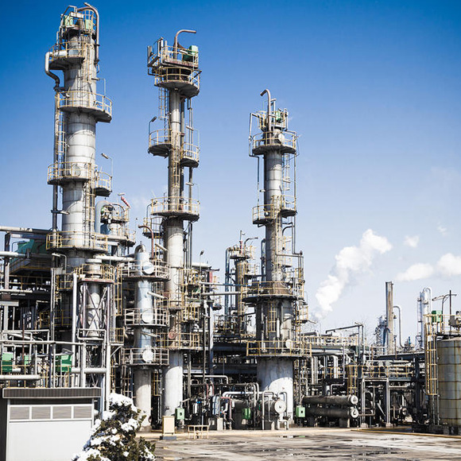
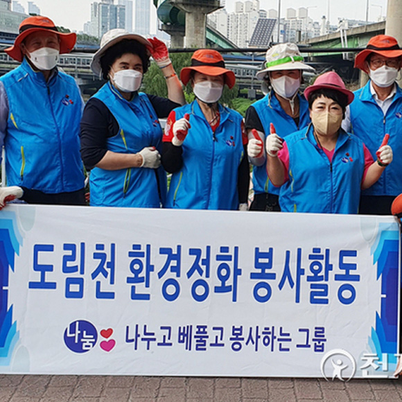
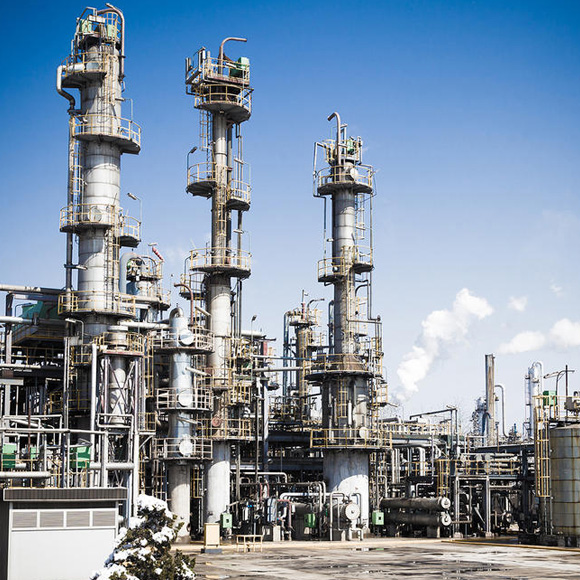
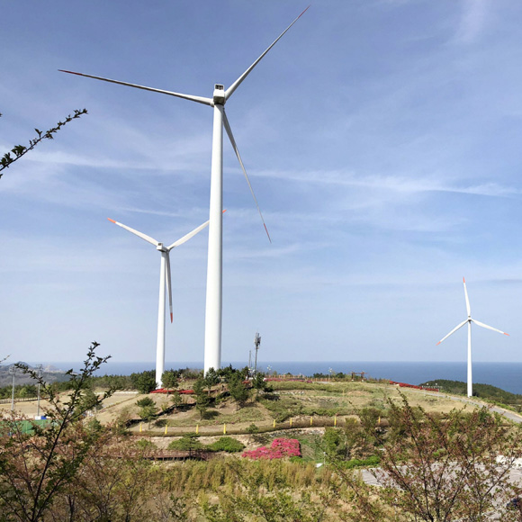
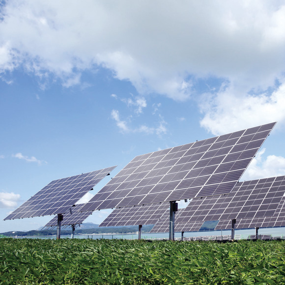
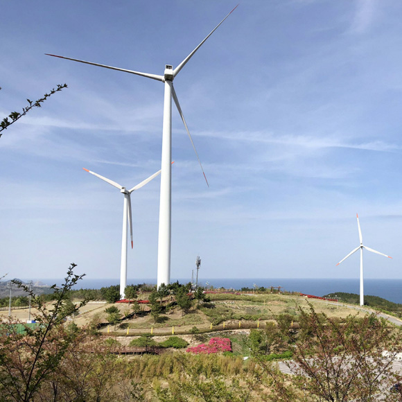
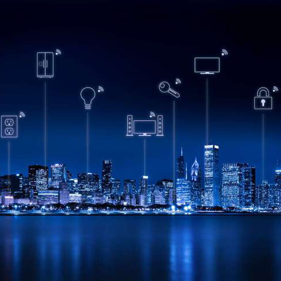
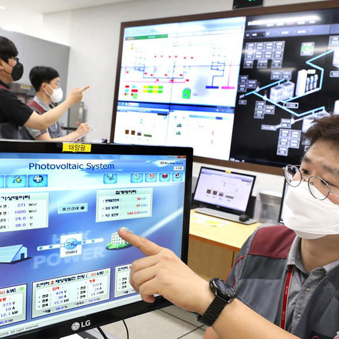
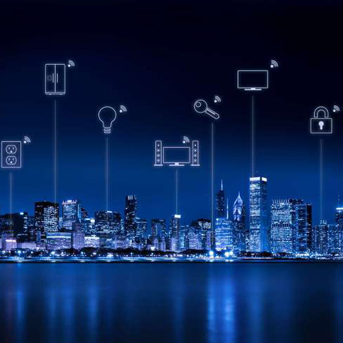

HOME >
ESG >
그린경영
그린경영
깨끗한 환경과 희망찬 미래를 만드는 기업이 되겠습니다.
-
CO2저감과 자연환경 보전
-

- 온실가스 저감활동
- 효성은 온실가스로 인한 환경파괴를 줄이고 정부의 저탄소 녹색성장 기본법을 이행하고자 각 생산시설별 온실가스 저감활동을 펼치고 있습니다. 울산과 구미, 용연 등 여러 사업장에서 에너지관리 공단과 온실 가스 저감을 위한 자발적 협약을 체결해 이행하고 있으며, 친환경 설비 도입과 연료 교체 등을 지속적으로 추진하고 있습니다.
-

- 자연 정화운동
- 효성은 사업장별로 1사1산, 1사1하천 운동을 통해 사업장 인근의 자연환경을 지키는 일에 적극참여하고 있습니다. 직원들의 자발적인 참여를 통해 이루어지는 이러한 활동들을 통해 지역사회의 일원으로서 책임을 다하고자 합니다.
-

-
신재생에너지 개발
-

- 풍력발전 기술
- 효성은 전력 송배전 장비, 발전기, 산업용 변속기 등 기존의 사업영역에서 축적한 기술 노하우를 바탕으로 1999년부터 풍력발전 분야에 독자적인 기술을 개발해 왔습니다. 그 결과 2004년 국내 최초로 독자적인 풍력터빈 시스템 기술 개발에 성공해 제주도 풍력단지를 비롯해 강원도 대기리, 매봉산 등에서 실제 운용하고 있습니다.
-

- 태양광발전 시스템
- 자연의 무한한 에너지원인 햇빛을 이용하는 태양광발전은 온실가스 배출을 줄이는 데에도 큰 몫을 하는 미래청정에너지 사업입니다. 2011년 국내 신재생에너지 발전량의 2.6%를 차지할 것으로 전망되는 시장성이 밝은 사업이며 2020년 시장규모가 100조원 정도로 확대될 것으로 예측됩니다.
-

-
효율적인 에너지 사용
-

- 스마트 그리드
- 효성은 풍력 등 신재생 에너지가 활용되는 스마트 그리드 사업에도 본격 진출해 있습니다. 스마트 그리드란 전력기술에 IT를 접목해서 전력 공급자와 소비자가 양방향으로 실시간 정보를 교환함으로써 에너지 효율을 최적화 하는 지능형 전력망 시스템을 말합니다.
-

- 고효율 발전 기술
- 효성은 그동안 축적한 고효율 에너지 제품 제조기술을 바탕으로 에너지 소비와 CO2 발생을 줄이는 고효율 펌프를 생산하고 있습니다. 효성의 고효율 펌프는 서울의 랜드마크라 할 수 있는 청계천에 설치되어 깨끗한 물 순환과 에너지 효율 극대화에 기여하고 있습니다.
-
